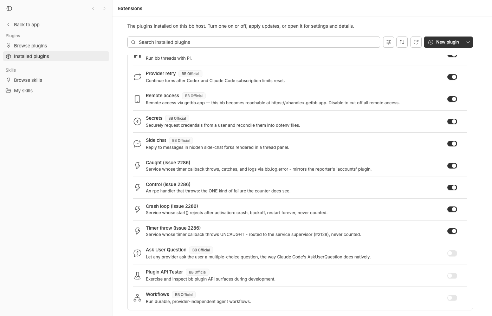
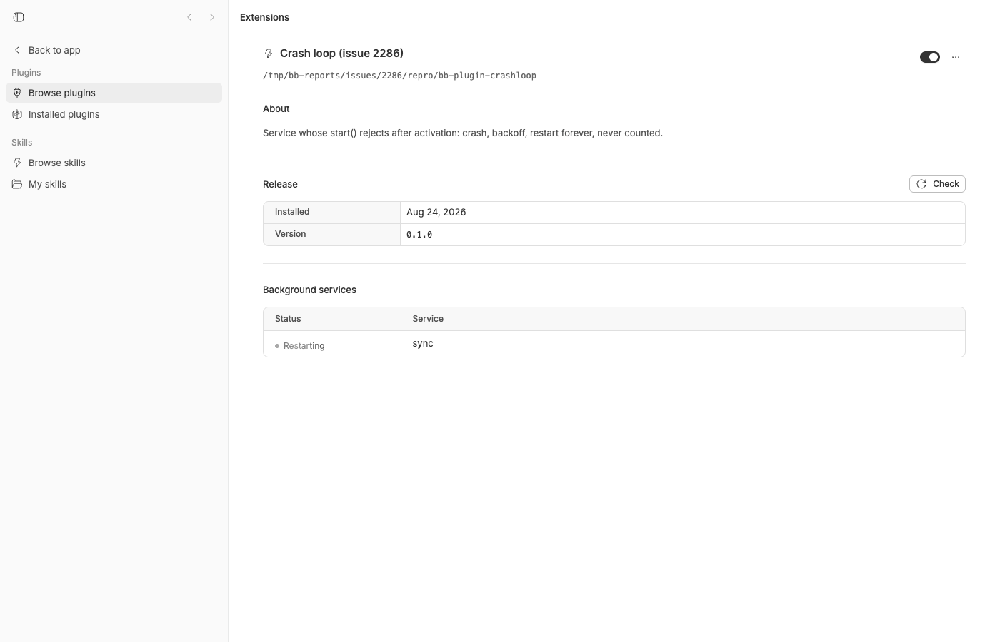
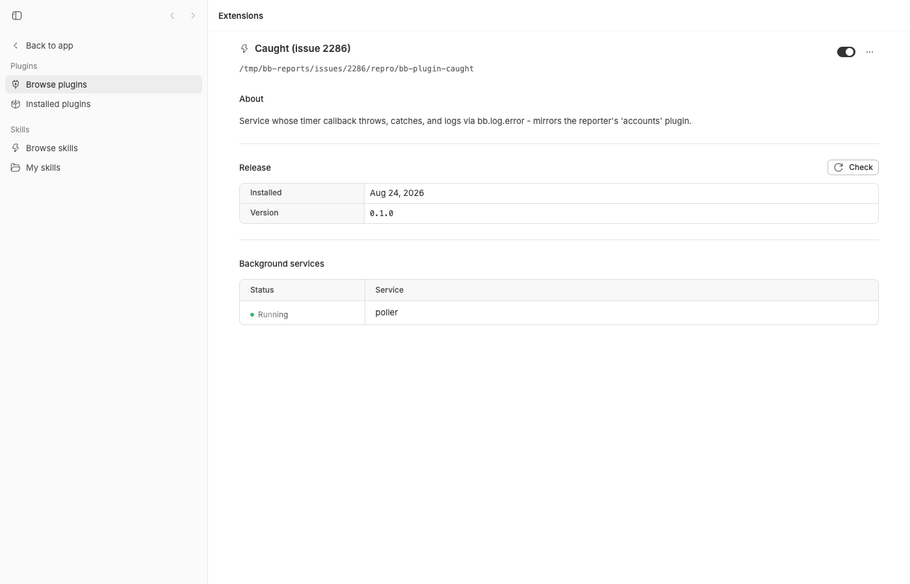

#2286 · bb plugin list reports handlers: 0 errors while a plugin throws on every call
Verdict: REPRODUCED · Root-cause confidence: high
1. TL;DR
A plugin that fails on every tick of its background work shows up in bb plugin list (and in GET /api/v1/plugins) as running with handlerStats.errorCount: 0. The reporter inferred "the counter only sees exceptions that escape the handler"; the real picture is narrower and worse. errorCount is incremented in exactly one place, invokeWrapped in apps/server/src/services/plugins/plugin-runtime.ts, which wraps only request-shaped surfaces (http routes, rpc, CLI, agent tools, thread events, mention providers, cron schedules, host signals). The three ways a long-running plugin actually fails — (A) it catches its own exception and reports it through bb.log.error, (B) a timer/socket callback inside a background service throws uncaught, (C) a background service's start() rejects after activation and crash-loops — never pass through invokeWrapped. For B and C the supervisor restarts the service with backoff and writes a WARN to the server log only; the plugin's status stays running, statusDetail stays null, and nothing is counted. For A bb has no hook at all today even though the plugin explicitly told bb about the failure via bb.log.error. I reproduced all three live on a dev instance (229 logged throws / 9 crash-restarts / 9 uncaught-exception restarts, all with errorCount: 0 and running) and with a vitest file whose three "desired behaviour" assertions fail on 494f66526.
2. Claims vs findings
| Claim from the issue | Status | Evidence |
|---|---|---|
bb plugin list reported the plugin as running throughout a 55 h outage | Verified (mechanism) | Live repro: three fixture plugins that fail every 1–16 s show running for the whole session (plugin-list-final.txt, §4). Service crash (onServiceSettled) and uncaught-exception (handleUncaughtException) paths never call setStatus after activation. |
Its counter read handlers: 0 errors | Verified, with a nuance | errorCount stayed 0 for all three failing fixtures (API JSON in §4). Nuance: the CLI does not literally print handlers: 0 errors — printPlugin omits the whole handlers: line when count === 0 and omits the , N errors suffix when errorCount === 0. The reporter most likely read the JSON (--json / API / mobile detail screen), where it is literally "errorCount":0. |
The plugin's own log carried 196 throws (bb.sdk.threads.rateLimitRecovery is not a function) | Unverified (their log); mechanism verified | <dataDir>/plugins/<id>/logs/plugin.log receives only bb.log.* lines from the plugin itself (plugin-log.ts, plugin-api.ts emitLog). Server-side supervisor warnings about crashes do not go there. So for the throws to appear in that file the plugin must have logged them itself — consistent with case A (caught + bb.log.error) or with a plugin that logs and then rethrows (B/C). rateLimitRecovery does not exist anywhere in the bb SDK; the plugin was calling a nonexistent method. |
The counter "works for whatever it does count" (handlers: 24 errors seen elsewhere) | Verified | Control fixture: 3 calls to a throwing rpc handler → handlers: 3 calls / … , 3 errors and statusDetail "rpc boom failed: …". |
| Inference: the counter increments only on exceptions that escape the handler; exceptions caught inside never reach it | Verified, and incomplete | True for the surfaces invokeWrapped wraps. But exceptions that escape a background service (cases B and C) are not counted either — the gap is not "caught vs escaped", it is "which surface". See §5. |
| Adjacent to #2128 but a different case | Verified | #2128 (merged, 2ff85986e) stops the server process from dying on a service's uncaught exception by aborting + restarting the service. It deliberately keeps the plugin running and adds no counter — case B in this report is exactly the post-#2128 behaviour. |
| Version bb 0.39.0 | Verified | packages/bb-app/package.json on the base commit is 0.39.0; git log 494f66526..origin/main touches none of the plugin runtime files, so the behaviour is unchanged on origin/main as of 2026-08-24. |
3. Environment
- bb
494f66526913557ab076e048218236f0a6610927(main, 2026-08-24), app version 0.39.0; worktree…/.claude/worktrees/wf_846839f8-f8a-3 - macOS 26.5.2 (Darwin 25.5.0), Apple Silicon; Node v22.23.1; pnpm + turbo 2.8.3; vitest 4.1.1
- Dev instance via
scripts/bb-dev-app current: Apphttp://localhost:12411, Serverhttp://localhost:20411, Host daemon:28411, data dir~/.bb-dev/bb-machines-HOST.getbb.app-checkouts-bb-.claude-worktrees-wf_846839f8-f8a-3-8e08fbc3307b(deleted after the run) - No provider turns were needed; the fixtures are pure
path:plugins.
4. Minimal reproduction
4a. Unit-level (fails on 494f66526)
- Copy
issue-2286-handler-error-visibility.test.tstoapps/server/test/services/plugins/. - Run it from
apps/server:pnpm exec vitest run test/services/plugins/issue-2286-handler-error-visibility.test.ts
- Expected (what an operator needs): every failing plugin has
errorCount > 0or a non-runningstatus. Actual:❯ @bb/server test/services/plugins/issue-2286-handler-error-visibility.test.ts (4 tests | 3 failed) 638ms × A. an exception caught inside the plugin and reported via bb.log.error leaves errorCount 0 and status running 167ms × B. an uncaught throw from a service timer is supervised (#2128) but never counted 168ms × C. a service that crash-loops after activation keeps status running and errorCount 0 170ms FAIL … > A. … AssertionError: expected 0 to be greater than 0 ❯ test/services/plugins/issue-2286-handler-error-visibility.test.ts:179:44 179| expect(entry?.handlerStats.errorCount).toBeGreaterThan(0); FAIL … > B. … AssertionError: expected 0 to be greater than 0 ❯ test/services/plugins/issue-2286-handler-error-visibility.test.ts:221:46 221| expect(entry?.handlerStats.errorCount).toBeGreaterThan(0); FAIL … > C. … AssertionError: expected 0 to be greater than 0 ❯ test/services/plugins/issue-2286-handler-error-visibility.test.ts:258:44 258| expect(entry?.handlerStats.errorCount).toBeGreaterThan(0); Test Files 1 failed (1) Tests 3 failed | 1 passed (4)Every assertion before the failing one passes, i.e. on the base commit each failing plugin reportsstatus === "running",statusDetail === null, and (for A) at least ten"level":"error"lines already in itsplugin.log. The control test ("a throwing rpc handler IS counted") passes:errorCount === 1,statusDetailcontainsrpc boom failed. Full output:vitest-main-clean.log.
4b. Live, with the CLI (what the reporter saw)
- Start a dev instance and point the CLI at it:
scripts/bb-dev-app current eval "$(scripts/bb-dev-app env)"
- Install the four fixture plugins from
2286/repro/(each is a 20-linepath:plugin; sources below):for p in caught timerthrow crashloop control; do pnpm bb:dev plugin install /tmp/bb-reports/issues/2286/repro/bb-plugin-$p --yes done
- Exercise the control plugin's rpc three times (this is the only kind of failure the counter sees):
curl -s -X POST $BB_SERVER_URL/api/v1/plugins/control/rpc/boom -H 'content-type: application/json' -d '{}' {"ok":false,"error":{"code":"handler_error","message":"bb.sdk.threads.rateLimitRecovery is not a function"}} - Wait ~3 minutes, then list. Expected: the three plugins that fail every tick are visibly unhealthy. Actual (
pnpm bb:dev plugin list, 16:03 UTC, ~4 min after install):caught@0.1.0 running source: path:/tmp/bb-reports/issues/2286/repro/bb-plugin-caught service poller: running control@0.1.0 running (rpc boom failed: bb.sdk.threads.rateLimitRecovery is not a function) source: path:/tmp/bb-reports/issues/2286/repro/bb-plugin-control handlers: 3 calls / 0ms total / 0ms max, 3 errors crashloop@0.1.0 running source: path:/tmp/bb-reports/issues/2286/repro/bb-plugin-crashloop service sync: backoff timerthrow@0.1.0 running source: path:/tmp/bb-reports/issues/2286/repro/bb-plugin-timerthrow service poller: backoff
Onlycontrol— whose failures go through an rpc handler — gets ahandlers: … 3 errorsline and a status detail. The others show nohandlers:line at all (the line is suppressed whencount === 0).service …: backoffflickers betweenbackoffandrunningas the supervisor restarts;caughtnever even flickers. - Same data as JSON from the server (
curl -s $BB_SERVER_URL/api/v1/plugins, full dump inplugins-api.json):{"id":"caught","status":"running","statusDetail":null,"handlerStats":{"count":0,"totalMs":0,"maxMs":0,"errorCount":0},"services":[{"name":"poller","state":"running"}]} {"id":"control","status":"running","statusDetail":"rpc boom failed: bb.sdk.threads.rateLimitRecovery is not a function","handlerStats":{"count":3,"totalMs":0.289,"maxMs":0.160,"errorCount":3},"services":[]} {"id":"crashloop","status":"running","statusDetail":null,"handlerStats":{"count":0,"totalMs":0,"maxMs":0,"errorCount":0},"services":[{"name":"sync","state":"backoff"}]} {"id":"timerthrow","status":"running","statusDetail":null,"handlerStats":{"count":0,"totalMs":0,"maxMs":0,"errorCount":0},"services":[{"name":"poller","state":"backoff"}]} - Meanwhile the plugins' own logs are full of throws, exactly as the reporter described (
pnpm bb:dev plugin logs caught -n 3):{"ts":1787587230221,"level":"error","message":"poll failed: bb.sdk.threads.rateLimitRecovery is not a function"} {"ts":1787587231222,"level":"error","message":"poll failed: bb.sdk.threads.rateLimitRecovery is not a function"} {"ts":1787587232223,"level":"error","message":"poll failed: bb.sdk.threads.rateLimitRecovery is not a function"}Counts at 16:03 UTC:caught229 error lines,crashloop9 error lines (one per crash),timerthrow9 restarts ("poller started"), and 18service … crashedwarnings in the server log (server-log-excerpt.txt) — none of which reacherrorCountorstatus.

handlerStats — see §5.)
crashloop: the only hint is the transient "Restarting" state of its service (it reads "Running" between crashes). No error count, no banner, no status change.
caught — the case that mirrors the reporter's plugin. 229 logged errors so far; the page says "Running" and nothing else.Fixture sources
bb-plugin-caught/server.ts (case A — mirrors the reporter's plugin):
export default function plugin(bb: any) {
bb.background.service("poller", {
async start(signal: AbortSignal) {
const timer = setInterval(() => {
try {
bb.sdk.threads.rateLimitRecovery(); // does not exist on the SDK
} catch (error) {
bb.log.error(`poll failed: ${error instanceof Error ? error.message : String(error)}`);
}
}, 1000);
await new Promise<void>((resolve) =>
signal.addEventListener("abort", () => { clearInterval(timer); resolve(); }));
},
});
}
bb-plugin-timerthrow/server.ts (case B — uncaught throw from a timer inside a service):
export default function plugin(bb: any) {
bb.background.service("poller", {
async start(signal: AbortSignal) {
bb.log.info("poller started");
const timer = setTimeout(() => { bb.sdk.threads.rateLimitRecovery(); }, 1500);
await new Promise<void>((resolve) =>
signal.addEventListener("abort", () => { clearTimeout(timer); resolve(); }));
},
});
}
bb-plugin-crashloop/server.ts (case C — start() rejects after activation):
export default function plugin(bb: any) {
bb.background.service("sync", {
async start(signal: AbortSignal) {
await new Promise((r) => setTimeout(r, 1500));
if (signal.aborted) return;
bb.log.error("sync failed: bb.sdk.threads.rateLimitRecovery is not a function");
throw new TypeError("bb.sdk.threads.rateLimitRecovery is not a function");
},
});
}
bb-plugin-control/server.ts (counted):
const passthrough = { "~standard": { version: 1, vendor: "issue-2286", validate: (value: unknown) => ({ value }) } };
export default function plugin(bb: any) {
bb.rpc.register({ boom: { input: passthrough, output: passthrough } }, {
boom: async () => { bb.sdk.threads.rateLimitRecovery(); },
});
}
Repro test (inline, also at 2286/repro/issue-2286-handler-error-visibility.test.ts):
/**
* Repro for get-bb/bb#2286: `bb plugin list` reports `handlers: 0 errors`
* (and status `running`) while a plugin fails on every call.
*
* `handlerStats.errorCount` is only incremented by `invokeWrapped` in
* plugin-runtime.ts, which wraps request-shaped surfaces (http, rpc, cli,
* tools, thread events, mention providers, schedules, host signals). Three
* failure paths that a long-running plugin actually takes never touch it:
*
* A. the plugin catches its own exception and reports it via bb.log.error
* B. a timer callback inside a background service throws uncaught
* (routed to the supervisor by #2128, service aborted + restarted)
* C. a background service's start() rejects after activation
* (onServiceSettled: backoff + restart, logger.warn in the server log)
*
* The first test is a control proving the counter works for an rpc handler.
* Tests A/B/C assert the health signal a reader of `bb plugin list` would
* need; on 494f66526 they FAIL (errorCount stays 0, status stays "running").
*/
import { mkdtemp, mkdir, readFile, rm, writeFile } from "node:fs/promises";
import { tmpdir } from "node:os";
import { join } from "node:path";
import { afterEach, beforeEach, describe, expect, it, vi } from "vitest";
import { createConnection, migrate, type DbConnection } from "@bb/db";
import type { Logger } from "@bb/logger";
import { createAiServiceRegistry } from "../../../src/services/ai/ai-service-registry.js";
import {
createPluginService,
type PluginService,
} from "../../../src/services/plugins/plugin-service.js";
import { testLogger } from "../../helpers/test-app.js";
import { createNoopTelemetryService } from "../../../src/services/system/telemetry.js";
const logger = testLogger as unknown as Logger;
const globals = globalThis as Record<string, unknown>;
async function writePlugin(
dir: string,
options: { name: string; serverSource: string },
): Promise<string> {
const rootDir = join(dir, options.name);
await mkdir(rootDir, { recursive: true });
await writeFile(
join(rootDir, "package.json"),
JSON.stringify({
name: options.name,
version: "0.1.0",
bb: {
name: "2286 fixture",
description: "Handler error visibility fixture.",
branding: { icon: "Zap" },
server: "./server.ts",
},
}),
);
await writeFile(join(rootDir, "server.ts"), options.serverSource);
return rootDir;
}
describe("#2286 handler error visibility", () => {
let db: DbConnection;
let workDir: string;
let dataDir: string;
let service: PluginService;
beforeEach(async () => {
db = createConnection(":memory:");
migrate(db);
workDir = await mkdtemp(join(tmpdir(), "bb-2286-"));
dataDir = join(workDir, "data");
service = createPluginService({
aiServices: createAiServiceRegistry(),
telemetry: createNoopTelemetryService(),
db,
hub: {
getDaemonSessionIdForHost: () => null,
notifyPluginSignal: () => 0,
notifySystem: () => {},
},
logger,
dataDir,
appVersion: "0.9.0",
loadTimeoutMs: 2000,
serviceStopTimeoutMs: 100,
serviceRestartBaseMs: 5,
});
});
afterEach(async () => {
await service.stop();
await rm(workDir, { recursive: true, force: true });
});
it("control: a throwing rpc handler IS counted", async () => {
const rootDir = await writePlugin(workDir, {
name: "bb-plugin-control",
serverSource: `
export default function plugin(bb: any) {
const passthrough = {
"~standard": { version: 1, vendor: "test", validate: (value: any) => ({ value }) },
};
bb.rpc.register(
{ boom: { input: passthrough, output: passthrough } },
{
boom: async () => {
const sdk: any = { threads: {} };
sdk.threads.rateLimitRecovery();
},
},
);
}
`,
});
await service.installPath(rootDir);
const lookup = service.getRpcHandler("control", "boom");
expect(lookup.outcome).toBe("found");
if (lookup.outcome !== "found") return;
const result = await service.invokeRpcHandler(
"control",
"boom",
lookup.value,
{},
);
expect(result.ok).toBe(false);
const entry = service.list().find((p) => p.id === "control");
expect(entry?.handlerStats.errorCount).toBe(1);
expect(entry?.statusDetail).toContain("rpc boom failed");
});
it("A. an exception caught inside the plugin and reported via bb.log.error leaves errorCount 0 and status running", async () => {
const rootDir = await writePlugin(workDir, {
name: "bb-plugin-caught",
serverSource: `
export default function plugin(bb: any) {
const g = globalThis as any;
g.__caughtThrows = 0;
bb.background.service("poller", {
async start(signal: any) {
// Stand-in for bb.sdk (not bound in this harness): same TypeError shape.
const sdk: any = { threads: {} };
const timer = setInterval(() => {
try {
sdk.threads.rateLimitRecovery();
} catch (error) {
g.__caughtThrows += 1;
bb.log.error("poll failed: " + (error as Error).message);
}
}, 5);
await new Promise<void>((resolve) =>
signal.addEventListener("abort", () => { clearInterval(timer); resolve(); }));
},
});
}
`,
});
await service.installPath(rootDir);
await vi.waitFor(
() => expect(globals.__caughtThrows as number).toBeGreaterThanOrEqual(10),
{ timeout: 2000 },
);
// The plugin's own log file carries every throw...
const log = await readFile(
join(dataDir, "plugins", "caught", "logs", "plugin.log"),
"utf8",
);
const errorLines = log
.split("\n")
.filter((l) => l.includes('"level":"error"'));
expect(errorLines.length).toBeGreaterThanOrEqual(10);
expect(errorLines[0]).toContain(
"sdk.threads.rateLimitRecovery is not a function",
);
// ...but nothing a `bb plugin list` reader sees reflects it.
const entry = service.list().find((p) => p.id === "caught");
expect(entry?.status).toBe("running");
expect(entry?.statusDetail).toBeNull();
expect(entry?.services).toEqual([{ name: "poller", state: "running" }]);
// Desired: the health signal reflects the failures. FAILS on 494f66526.
expect(entry?.handlerStats.errorCount).toBeGreaterThan(0);
});
it("B. an uncaught throw from a service timer is supervised (#2128) but never counted", async () => {
const rootDir = await writePlugin(workDir, {
name: "bb-plugin-timerthrow",
serverSource: `
export default function plugin(bb: any) {
const g = globalThis as any;
g.__timerStarts = 0;
bb.background.service("poller", {
async start(signal: any) {
g.__timerStarts += 1;
const sdk: any = { threads: {} };
const timer = setTimeout(() => {
sdk.threads.rateLimitRecovery();
}, 5);
await new Promise<void>((resolve) =>
signal.addEventListener("abort", () => { clearTimeout(timer); resolve(); }));
},
});
}
`,
});
const vitestListeners = process.listeners("uncaughtException");
process.removeAllListeners("uncaughtException");
const unclaimed: unknown[] = [];
process.on("uncaughtException", (error) => {
if (!service.handleUncaughtException(error)) unclaimed.push(error);
});
try {
await service.installPath(rootDir);
// Every start throws from its timer → abort → backoff → restart.
await vi.waitFor(
() => expect(globals.__timerStarts as number).toBeGreaterThanOrEqual(4),
{ timeout: 3000 },
);
expect(unclaimed).toEqual([]);
const entry = service.list().find((p) => p.id === "timerthrow");
expect(entry?.status).toBe("running");
expect(entry?.statusDetail).toBeNull();
// Desired: the repeated uncaught exceptions show up. FAILS on 494f66526.
expect(entry?.handlerStats.errorCount).toBeGreaterThan(0);
} finally {
process.removeAllListeners("uncaughtException");
for (const listener of vitestListeners) {
process.on("uncaughtException", listener);
}
}
});
it("C. a service that crash-loops after activation keeps status running and errorCount 0", async () => {
const rootDir = await writePlugin(workDir, {
name: "bb-plugin-crashloop",
serverSource: `
export default function plugin(bb: any) {
const g = globalThis as any;
g.__crashStarts = 0;
bb.background.service("sync", {
async start(signal: any) {
g.__crashStarts += 1;
// Survive the activation window, then fail like a real sync loop.
await new Promise((r) => setTimeout(r, 5));
if (signal.aborted) return;
throw new TypeError("bb.sdk.threads.rateLimitRecovery is not a function");
},
});
}
`,
});
await service.installPath(rootDir);
await vi.waitFor(
() => expect(globals.__crashStarts as number).toBeGreaterThanOrEqual(5),
{ timeout: 3000 },
);
const entry = service.list().find((p) => p.id === "crashloop");
expect(entry?.status).toBe("running");
expect(entry?.statusDetail).toBeNull();
// Desired: five crashes of the only service are visible. FAILS on 494f66526.
expect(entry?.handlerStats.errorCount).toBeGreaterThan(0);
});
});
Repro files: 2286/repro/ · logs: 2286/logs/
5. Root cause
One counter, one increment site, covering only request-shaped surfaces. handlerStats.errorCount is owned by plugin-runtime.ts and incremented only inside invokeWrapped's catch (plugin-runtime.ts#L779-L818):
async function invokeWrapped<T>(id, label, run) {
const stats = statsFor(id);
…
try {
return { ok: true, value: await runEventLoopWork(`plugin:${id} ${label}`, run) };
} catch (error) {
const message = error instanceof Error ? error.message : String(error);
stats.errorCount += 1; // ← the only increment
logger.warn(`[plugin:${id}] ${label} failed: ${message}`);
if (statuses.get(id)?.status === "running") {
setStatus(id, "running", `${label} failed: ${message}`); // ← the only statusDetail for failures
}
return { ok: false, error: message, cause: error };
} finally { stats.count += 1; … }
}
Its callers are the request/event surfaces in plugin-service.ts: host worker exit and host signals (L1963-L1998), http routes and rpc (L2084-L2121), the CLI command (L2164), agent configure and agent tools (L2235-L2313), mention search/resolve (L2354-L2455), cron schedules (L2523-L2533), plus thread events in the runtime (plugin-runtime.ts#L862-L873).
Background services are supervised by a different path that counts nothing. runService (L575-L606) watches the start() promise and hands both a rejection (case C) and an uncaught exception from the service's async context (case B, via handleUncaughtException, L614-L655) to onServiceSettled (L657-L713). After the activation window it does this:
if (stabilizingPluginIds.has(id)) { // only during load → status "error"
service.state = "stopped";
setStatus(id, "error", `service ${name} crashed: ${message}`);
…
return;
}
if (Date.now() - service.startedAt >= SERVICE_HEALTHY_RESET_MS) service.consecutiveCrashes = 0;
const delayMs = Math.min(serviceRestartBaseMs * 2 ** service.consecutiveCrashes, SERVICE_RESTART_MAX_MS);
service.consecutiveCrashes += 1;
service.state = "backoff";
logger.warn(`[plugin:${id}] service ${name} crashed: ${message} — restarting in ${delayMs}ms`);
const timer = setTimeout(() => { … runService(id, service); }, delayMs);
No statsFor(id), no setStatus, no persisted "last crash". The crash is recorded in exactly one place, logger.warn into the server log, and the only externally visible trace is services[].state toggling to backoff for at most SERVICE_RESTART_MAX_MS = 60 s (L340-L342) before flipping back to running. A service that works for five minutes between crashes (SERVICE_HEALTHY_RESET_MS) has its backoff reset too, so a slow-failing loop — like the reporter's one-throw-per-17-minutes — looks permanently healthy. #2128 (2ff85986e) added the case-B path on purpose to keep the server alive, and its own test asserts the plugin stays running afterwards; it did not add any health signal.
Case A has no hook today. bb.log.error is emitLog in plugin-api.ts (L582-L596): it prefixes the server log and appends a JSONL line to <dataDir>/plugins/<id>/logs/plugin.log (plugin-log.ts#L5-L10). Nothing aggregates log levels into list(). The issue's ask "count handler-caught exceptions" is literally impossible for bb (it cannot observe a catch inside plugin code), but the plugin did hand bb an explicit error signal 196 times and bb dropped it on the floor as far as health goes.
Why the symptom follows. list() (plugin-service.ts#L1398-L1459) copies handlerStats and statuses verbatim, so the API/CLI/mobile all report errorCount: 0 and running. The CLI's printPlugin (apps/cli/src/commands/plugin.ts#L786-L800) then suppresses the whole handlers: line when count === 0, which is why a never-invoked-but-constantly-failing plugin prints only running + service x: running.
Deeper issue: the desktop UI has no health signal for this at all, by design. plugin-status.ts maps only error / incompatible / missing / needs-configuration / degraded to a visible signal; running maps to null regardless of handlerStats, and ToolsView.plugin-detail.test.tsx (L683-L697, "does not promote cumulative handler diagnostics into a page banner") guards that errorCount: 3 renders nothing. Only the mobile detail screen (PluginDetailScreen.tsx#L467-L470) and the CLI/API show the counter. So even after fixing the counter, a desktop user would still see nothing; the counter is a CLI/API/mobile-only signal.
6. Proposed fix (first principles)
The counter is fine; its coverage is not. Two small server-side changes in plugin-runtime.ts close B and C, and one in plugin-api.ts closes A. None of them cross the server/daemon boundary or change the wire protocol to the host daemon, so no HOST_DAEMON_PROTOCOL_VERSION bump. The /api/v1/plugins response shape changes only if a new field is added (see 3).
- Count service crashes as handler errors and surface the last one as status detail. In
onServiceSettled's crash branch (after thestabilizingPluginIdscheck):statsFor(id).errorCount += 1;and, whenstatuses.get(id)?.status === "running",setStatus(id, "running", `service ${name} crashed: ${message}`)— the same conventioninvokeWrappedalready uses for rpc/http. This makescrashloopandtimerthrowprintrunning (service sync crashed: …)andhandlers: … N errors. Risk:stats.countis not incremented (a crash is not a "call"), soprintPluginwould still hide the line whencount === 0; change the CLI condition tostats.count > 0 || stats.errorCount > 0. Also clear the detail on a later healthy stretch (e.g. in theSERVICE_HEALTHY_RESET_MSreset or whenstart()next resolves cleanly) so a one-off crash from last week does not read as current. - Treat the uncaught-exception path the same way. Case B already funnels into
onServiceSettledwithcrashed: true, so change 1 covers it; add a test that the #2128 path increments the counter (my test B). - Give
bb.log.errora health signal. Inplugin-api.ts emitLog, whenlevel === "error", bump a per-plugin counter (simplest:statsFor(id).errorCount; cleaner: a newhandlerStats.loggedErrorCountso consumers can tell "bb saw the handler fail" from "the plugin said it failed") and setstatusDetailto the latest message. Plugins that log noisy non-fatal errors would then show a growing count, which is arguably correct and is exactly what the reporter's backstop was trying to grep for. If a separate field is added, it is an additive change topluginHandlerStatsSchemainpackages/server-contract(CLI, app, mobile all read it through the schema) — updateprintPluginand the mobile detail screen in the same change. - Optional, addresses the deeper issue: have
pluginRowSignal/ the detail page show a warning-tone "Failing" signal whenerrorCount(or the new field) grew recently, replacing the "cumulative diagnostics are not a banner" rule with a time-windowed one.
What could go wrong: counting every crash makes a plugin that crashes once per day over months show a large cumulative number with no time window; the reporter explicitly accepts that trade ("would have surfaced this on the first throw"). If that is a concern, keep errorCount cumulative and add lastErrorAt. The three failing tests in §4a become the regression tests; the existing "restarts a crashed service with backoff" and #2128 tests in plugin-background.test.ts keep asserting the service recovers and the plugin stays running, which remains true.
7. PR review
No open PR is linked to this issue.
8. Related issues
- #2128 Route plugin service uncaught exceptions to the service supervisor (merged,
2ff85986e) — created the case-B path that keeps the pluginrunningafter an uncaught exception without counting it. - #1746 — the server crash-loop that #2128 fixed; its report is at 1746.html.
- #636 introduced the service crash → backoff → restart sequence without a status or counter change.
9. Appendix
Commands run
gh issue view 2286 --repo get-bb/bb --comments
pnpm install --frozen-lockfile --prefer-offline
pnpm exec turbo run build
git fetch origin main && git log 494f66526..origin/main --oneline -- apps/server/src/services/plugins packages/plugin-sdk apps/server/src/cli packages/cli # (empty)
grep -rn "errorCount" apps/server/src packages/*/src # single increment site
grep -n "invokeWrapped(" apps/server/src/services/plugins/plugin-service.ts
git log --oneline -S consecutiveCrashes -- apps/server/src/services/plugins/plugin-runtime.ts # e22c2641d (#636)
git log --oneline -S handleUncaughtException -- apps/server/src/services/plugins/plugin-runtime.ts # 2ff85986e (#2128)
gh search code rateLimitRecovery # no bb-related hits; the method does not exist in the SDK
scripts/bb-dev-app current
export BB_SERVER_URL=http://localhost:20411 BB_HOST_DAEMON_PORT=28411 BB_PROJECT_ID=proj_personal
pnpm bb:dev plugin install /tmp/bb-reports/issues/2286/repro/bb-plugin-{caught,timerthrow,crashloop,control} --yes
pnpm bb:dev plugin reload control
curl -s -X POST $BB_SERVER_URL/api/v1/plugins/control/rpc/boom -H 'content-type: application/json' -d '{}' # x3
pnpm bb:dev plugin list ; pnpm bb:dev plugin logs caught -n 3 ; curl -s $BB_SERVER_URL/api/v1/plugins
cd apps/server && pnpm exec vitest run test/services/plugins/issue-2286-handler-error-visibility.test.ts
doobie --headless < shot-plugins.js # screenshots
pnpm dev:stop ; rm -rf ~/.bb-dev/…wf_846839f8-f8a-3-8e08fbc3307b
Server log excerpt (first seconds after install)
[08:59:47] ERROR: [server] [plugin:caught] poll failed: bb.sdk.threads.rateLimitRecovery is not a function [08:59:48] INFO: [server] [plugin:timerthrow] poller started [08:59:49] WARN: [server] [plugin:timerthrow] service poller raised an uncaught exception outside start(): bb.sdk.threads.rateLimitRecovery is not a function — aborting it [08:59:49] WARN: [server] [plugin:timerthrow] service poller crashed: bb.sdk.threads.rateLimitRecovery is not a function — restarting in 1000ms [08:59:51] ERROR: [server] [plugin:crashloop] sync failed: bb.sdk.threads.rateLimitRecovery is not a function [08:59:51] WARN: [server] [plugin:crashloop] service sync crashed: bb.sdk.threads.rateLimitRecovery is not a function — restarting in 1000ms [09:00:01] WARN: [server] [plugin:timerthrow] service poller crashed: … — restarting in 8000ms [09:00:10] WARN: [server] [plugin:timerthrow] service poller crashed: … — restarting in 16000ms
Full excerpt: server-log-excerpt.txt (102 lines). Full bb plugin list: plugin-list.txt. Install/build logs: install.log, build.log.
Notes on fidelity
- The reporter's plugin is not public, so which of A/B/C it hit is unverifiable. Its cadence (196 throws in 55.4 h ≈ one per 17 min, all landing in the plugin's own log) fits A (a periodic job with try/catch +
bb.log.error) or B (a periodic timer that throws uncaught; the service restarts and re-arms the timer). It does not fit C well (a start() crash loop at the 60 s max backoff would produce ~3,300 crashes), and it does not fit abb.background.schedulejob (those go throughinvokeWrappedand would have been counted and shown aslast: error). - In the vitest harness
bb.sdkis not bound, so the fixtures use a local{ threads: {} }stand-in to produce the sameTypeErrorshape; the live fixtures call the realbb.sdk.threads.rateLimitRecovery().